<!--HEADER-->
<ion-header>
  <ion-navbar>
    <ion-title>Tutoriel</ion-title>
  </ion-navbar>
</ion-header>

<ion-content>
	<ion-slides pager>
		<ion-slide class="tuto">
			<h1>D'accord ?</h1>
			<h1>Pas d'accord ?</h1>
			
			<h2><strong>Swipe les propositions des candidats à l'aveugle.</strong></h2>
			<h2>Et découvre celui qui te convient le plus !</h2>
		</ion-slide>
		<ion-slide>
			<ion-fab right top>
		   		<button ion-fab><ion-icon name="add"></ion-icon></button>
			</ion-fab>
			<ion-row>
				<ion-col col-10 class="new-quizz">
					Tu peux aussi générer de nouveaux quizz, en cliquant sur ce bouton, sur la page d'accueil
				</ion-col>
				<ion-col col-2>
					
				</ion-col>
			</ion-row>
			<button ion-button round icon-right big class="swipe-button" (click)="goSwipe()">
				Lancer le quizz
				<ion-icon name="arrow"></ion-icon>
			</button>
		</ion-slide>
	</ion-slides>
</ion-content>